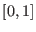

The random_seq class is the interface for a random number generator. Its derived classes produce uniformly distributed pseudo-random numbers. The underlying random number stream is accessed with two methods. The method next_long returns a random number as an unsigned long. The method next_dlb refines the next_long method by reducing that random number to a double precision number in the interval  . The random number sequence is initialized with the set_seed method, and the entire random number generator can be copied with the copy method. To summarize, the random_seq class has four virtual methods
void set_seed(unsigned long seed) double next_dbl() random_seq* copy() const unsigned long next_long()that must be implemented by any derived class.
Adevs comes with two implementations of the random_seq class: the crand class and the mtrand class. The crand class uses the rand function from the standard C library to implement the required methods. Its implementation is trivial. I've listed it below as an example of how to implement the random_seq interface.
class crand: public random_seq {
public:
/// Create a generator with the default seed
crand(){}
/// Create a generator with the given seed
crand(unsigned long seed) { srand (seed); }
/// Set the seed for the random number generator
void set_seed(unsigned long seed) { srand (seed); }
/// Get the next double uniformly distributed in [0, 1]
double next_dbl() { return (double)rand()/(double)RAND_MAX; }
/// Copy the random number generator
unsigned long next_long() { return (unsigned long)rand(); }
random_seq* copy() const { return new crand (); }
/// Destructor
~crand(){}
};
The mtrand class implements the Mersenne Twister random number generator12.1. This code is based on their open source implementation of the Mersenne Twister. Aside from its potential advantages as a random number generator, the mtrand class differs from the crand class by its ability to make deep copies. Every instance of the mtrand class has its own random number stream.
The rv class uses the uniform random numbers provided by a random_seq object to produce several different random number distributions: triangular, uniform, normal, exponential, lognormal, Poisson, Weibull, binomial, and many others. Every instance of the rv class is created with a random_seq. The default is an mtrand object, but any type of random_seq object can be passed to the rv constructor. The different random distributions are sampled by calling the appropriate method: triangular for a triangular distribution, exponential for an exponential distribution, poisson for a Poisson distribution, etc. Because Adevs is open source software, if a new distribution is needed then you can add a method that implements it to the rv class (and, I hope, contribute the expansion to the Adevs project).